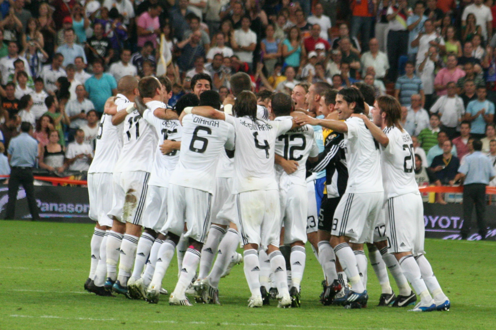
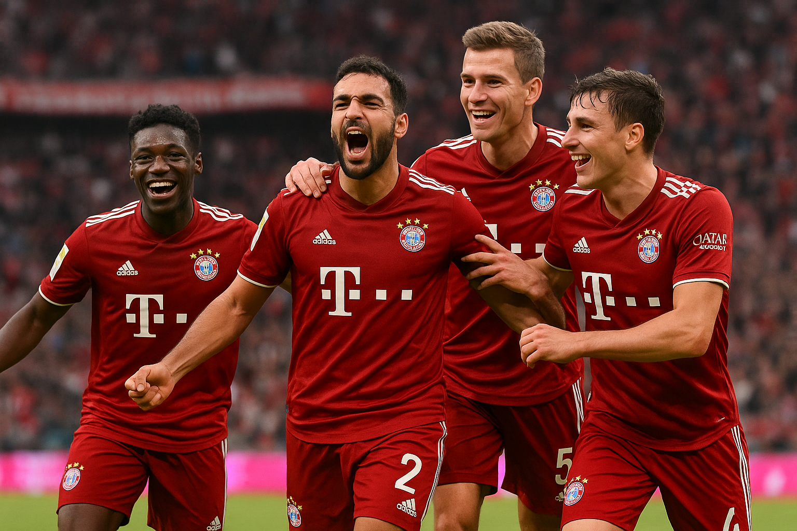
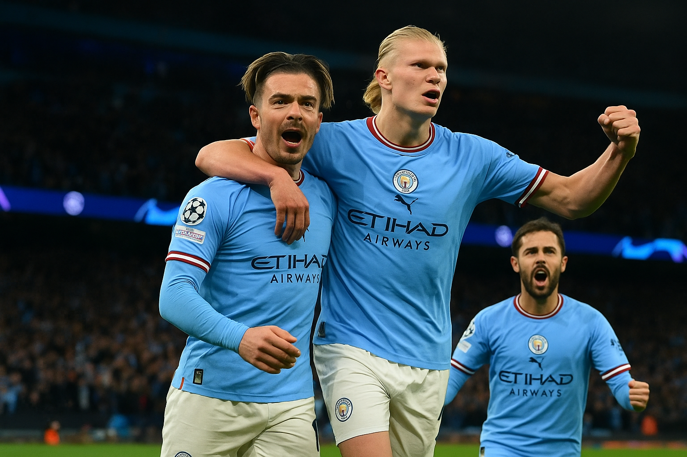

Clubes em destaque

Real Madrid
O clube mais vitorioso da Europa, com 15 títulos da Champions League. Fundado em 1902, é símbolo de tradição e excelência.

Paris Saint-Germain
Um dos clubes mais ricos do mundo, o PSG domina o futebol francês e busca o sonhado título europeu.

Bayern de Munique
Gigante da Alemanha, o Bayern é conhecido por sua força tática e por revelar grandes talentos do futebol mundial.

Manchester City
O clube inglês vive sua era de ouro, conquistando títulos nacionais e europeus com futebol ofensivo e moderno.